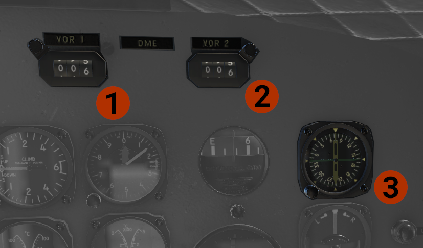

Copilot's Panel
Copilot's... five-pack!
On the copilot's side there is no airspeed indicator
- Vertical Speed Indicator (VSI).
- Altimeter: If you get barometric pressure in hPa, there is a placarded conversion table at the bottom of pilot's side panel. You can click it to pop out.
- Directional Gyro: Press the knob to CAGE the instrument, and then rotate the knob, to match wet compass.
- Artificial Horizon: Press the big knob to cage the instrument. Use the small knob to adjust miniature wings position. The aircraft on the ground sits at an 11o up attitude.
- Turn and Slip Indicator.
Copilot's Navigation Instruments

- VOR 1 DME:Bearing indications in the pilot's RMI.
- VOR 2 DME.
- RMI: The copilot's side RMI has 2 needles.
- The #1, green, needle shows the bearing to the ADF 2 tuned station.
- The #2, white, needle shows the bearing to the VOR 2 tuned station.
Copilot's Side Other Instruments

- Free Air Temp.
- Oil Pressure: Indicates the oil pressure for the autopilot.
- Oil Temperature: Indicates the oil temperature for each engine.
- CHT Temperature: Indicates the cylinder head temperature for each engine.
- Fuel Qty: Indicates the fuel quantity of each tank, in liters. Used the knob to switch between the tanks.
- Vacuum Press: Two indicators of each vacuum system.
- Unlock light: Indicates that the landing gear is in a not safe position. Rotate the light to adjust brightness.
- Lock light: Indicates that the landing gear is down and locked. Rotate the light to adjust brightness.